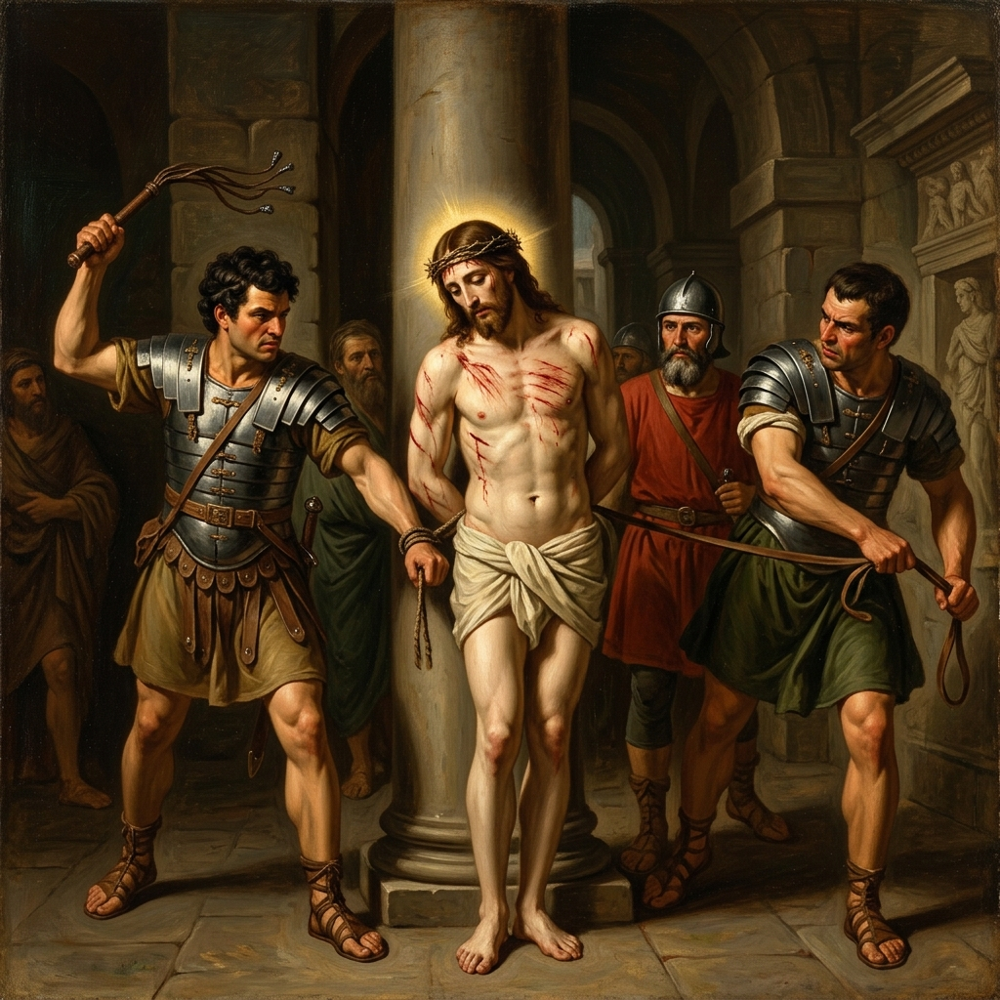
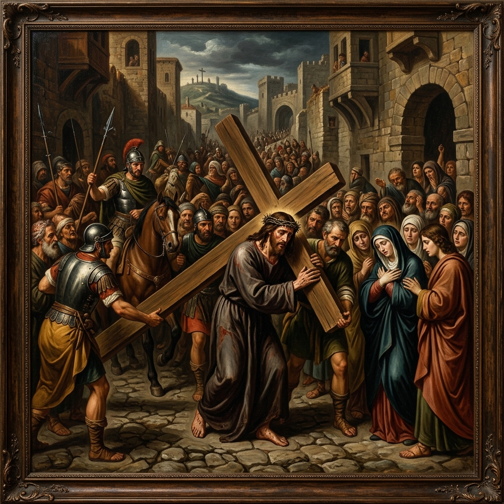
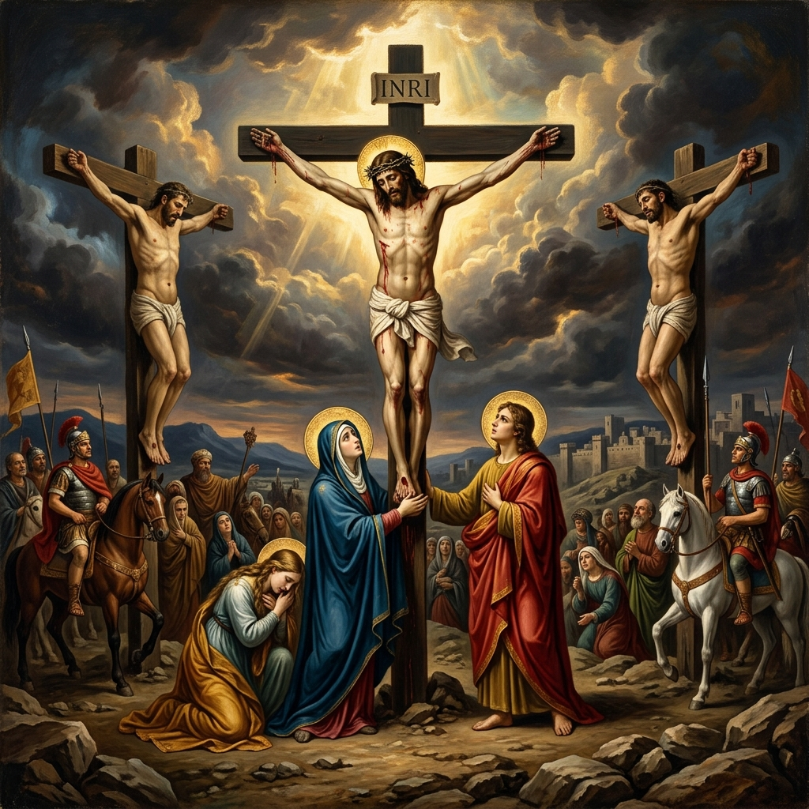
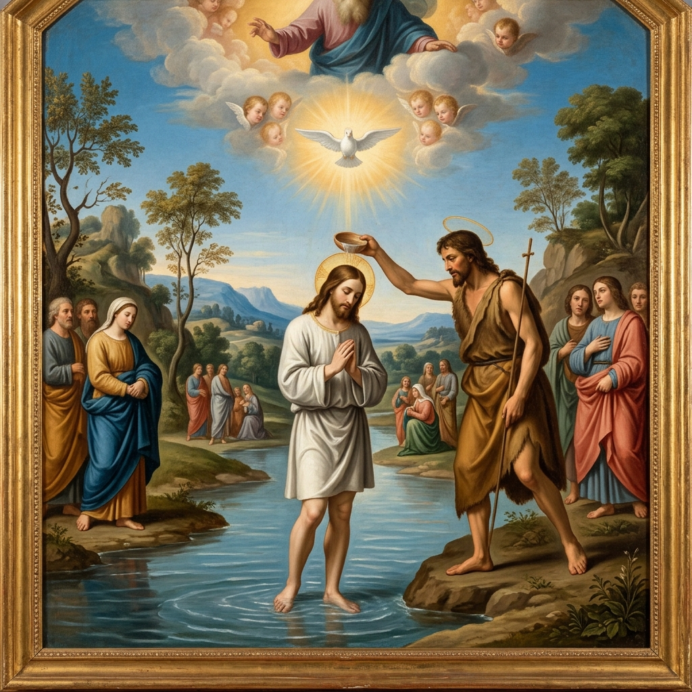
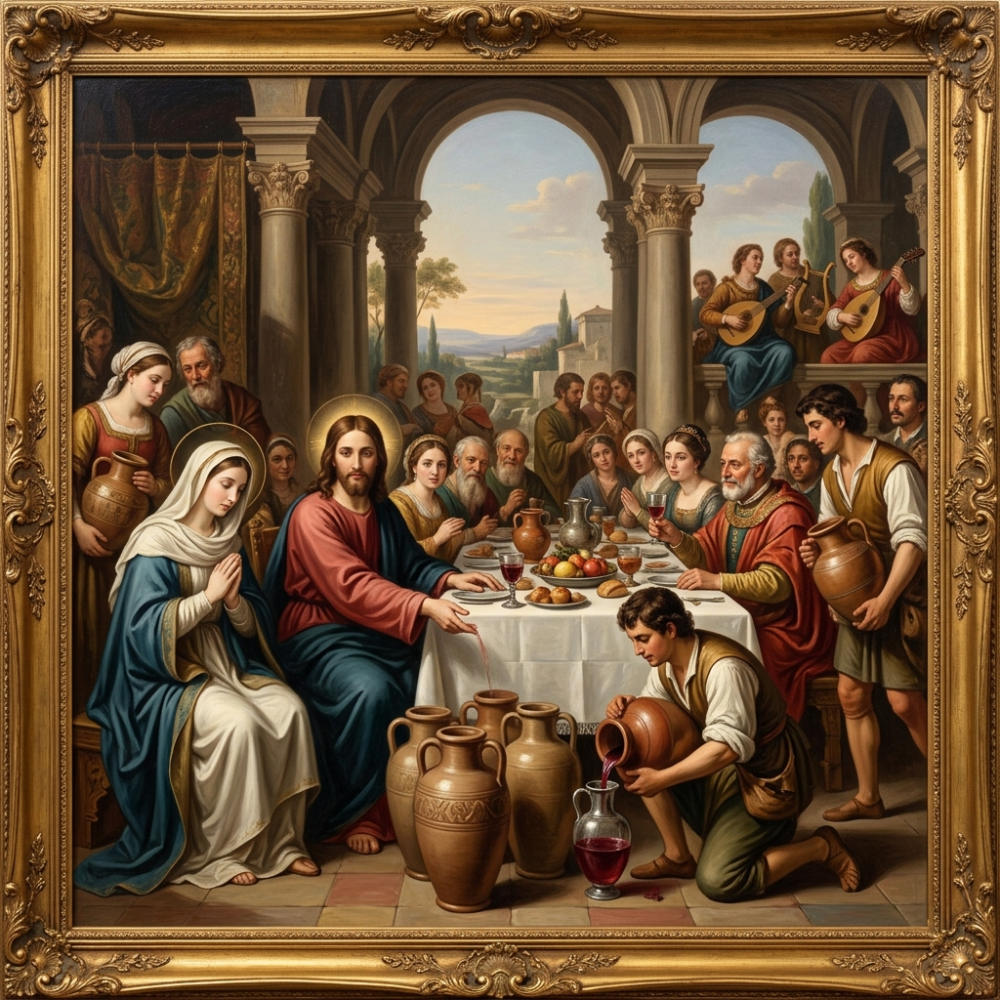
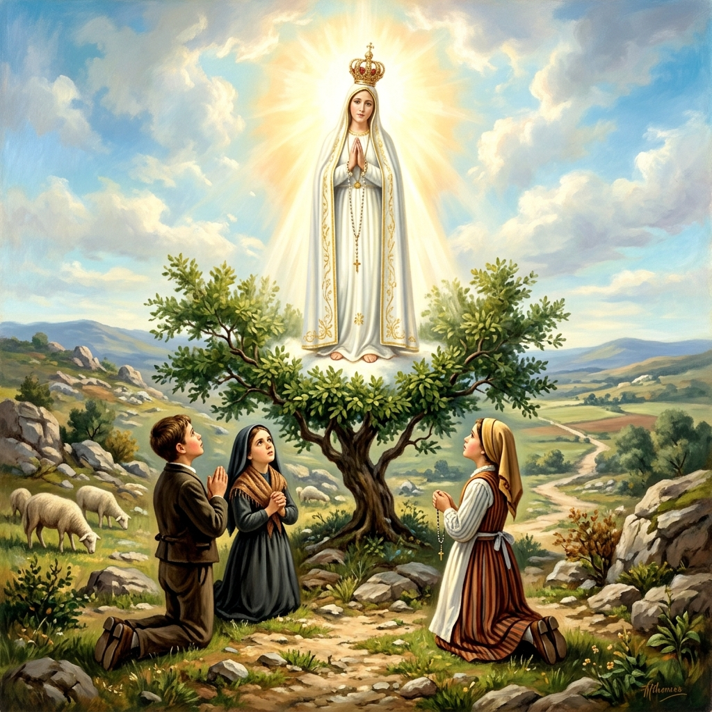
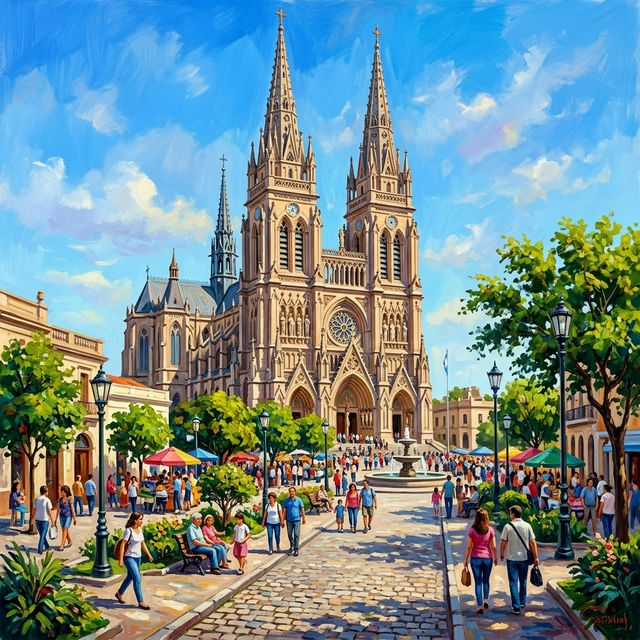

Red Maria
Reza el Rosario en las plazas
Encuentra personas cerca para rezar el
Rosario en plazas públicas
Sumate a un
Rosario cercano
Descubre dónde se reúnen en tu ciudad.
Organiza encuentros
en plazas
Sé voluntario y coordina el rezo.

Reza con comunidad
y paz
La oración en grupo renueva tu alma.
Cómo Funciona
Busca un Rosario
Abre el mapa y encuentra rosarios cercanos.
Únete y Reza
Confirmá tu asistencia.
Reza en Comunidad
Participá del rosario en vivo.
Únete a Red Maria
Crea tu cuenta para encontrar rosarios cerca
¡Bienvenido de vuelta!
Ingresa a tu cuenta para continuar
¿Olvidaste tu contraseña?
Ingresa tu email y te daremos un código de recuperación
Crea tu nueva contraseña
Ingresa el código y tu nueva contraseña
Rosarios Cercanos
5 encontradosPlaza San Martín
Hoy 19:00 hs · Misterios Gozosos
Intenciones
Escribe tu Intención
Comparte tu intención de oración con la comunidad
Intenciones de la Comunidad
Por la salud de mi familia "YT"
Por los jóvenes que buscan a Dios
Por la paz en el mundo ??
Por los enfermos y su pronta recuperación
Por las vocaciones sacerdotales y religiosas
Organizar un Rosario
Elige un lugar y horario para rezar en comunidad
Plaza San Martín
Hoy 19:00 hs · Misterios Gozosos
Ana Pérez
Confirmados
0Participantes
Intenciones
3Por la salud de mi familia
Por los jóvenes que buscan a Dios
Por la paz en el mundo
Rosario en Plaza San Martín
Hoy 19:00 hs

Oración las 24 Horas
Únete a la cadena de oración continua. Elegí tu horario y rezá desde donde estés.
Hoy
Tocá un horario libre para anotarte. Podés elegir varios turnos.
Aprende a Rezar el Santo Rosario
Una guía paso a paso para contemplar los misterios de nuestra fe
Video Explicativo
Aprende de forma rápida y visual cómo se reza el Santo Rosario

¿Qué es el Rosario?
El Santo Rosario es una oración contemplativa dedicada a la Virgen María. Se compone de 20 misterios agrupados en 4 series: Gozosos, Dolorosos, Gloriosos y Luminosos. Cada misterio se medita con un Padrenuestro, 10 Avemarías y un Gloria.
Estructura del Rosario
Señal de la Cruz
"En el nombre del Padre, y del Hijo, y del Espíritu Santo. Amén."
Acto de Contrición
"Señor mío Jesucristo, Dios y Hombre verdadero, me pesa de todo corazón haber pecado, porque con el pecado ofendí a un Dios tan bueno. Propongo firmemente no volver a pecar y confío en que por tu infinita misericordia me has de conceder el perdón de mis culpas. Amén."
Credo
"Creo en Dios, Padre todopoderoso, Creador del cielo y de la tierra. Creo en Jesucristo, su único Hijo, nuestro Señor, que fue concebido por obra y gracia del Espíritu Santo, nació de Santa María Virgen, padeció bajo el poder de Poncio Pilato, fue crucificado, muerto y sepultado, descendió a los infiernos, al tercer día resucitó de entre los muertos, subió a los cielos y está sentado a la derecha de Dios, Padre todopoderoso. Desde allí ha de venir a juzgar a vivos y muertos. Creo en el Espíritu Santo, la santa Iglesia católica, la comunión de los santos, el perdón de los pecados, la resurrección de la carne y la vida eterna. Amén."
1 Padrenuestro
"Padre nuestro, que estás en el cielo, santificado sea tu Nombre; venga a nosotros tu reino; hágase tu voluntad en la tierra como en el cielo. Danos hoy nuestro pan de cada día; perdona nuestras ofensas, como también nosotros perdonamos a los que nos ofenden; no nos dejes caer en la tentación, y líbranos del mal. Amén."
10 Avemarías
Por las virtudes de Fe, Esperanza y Caridad
"Dios te salve, María, llena eres de gracia, el Señor es contigo. Bendita Tú eres entre todas las mujeres, y bendito es el fruto de tu vientre, Jesús. Santa María, Madre de Dios, ruega por nosotros, pecadores, ahora y en la hora de nuestra muerte. Amén."
1 Gloria
"Gloria al Padre, y al Hijo, y al Espíritu Santo. Como era en el principio, ahora y siempre, por los siglos de los siglos. Amén."
Anunciar el Misterio
Se enuncia el misterio y se medita brevemente
Por cada Misterio
1 Padrenuestro + 10 Avemarías + 1 Gloria + Oración de Fátima
Oración de Fátima: "Oh Jesús mío, perdona nuestros pecados, líbranos del fuego del infierno, lleva al cielo a todas las almas, especialmente a las más necesitadas de tu misericordia."
Repetir 5 veces
Se repiten los pasos 4 al 8 cinco veces, una por cada Misterio: 1 Padrenuestro, 10 Avemarías y 1 Gloria por cada uno.
Al finalizar
Se reza por las intenciones de la Iglesia: 1 Padrenuestro, 3 Avemarías y 1 Gloria. Luego se reza el Salve:
"Dios te salve, Reina y Madre de misericordia, vida, dulzura y esperanza nuestra; Dios te salve. A ti llamamos los desterrados hijos de Eva; a ti suspiramos, gimiendo y llorando en este valle de lágrimas. Ea, pues, Señora, abogada nuestra, vuelve a nosotros esos tus ojos misericordiosos; y después de este destierro muéstranos a Jesús, fruto bendito de tu vientre. ¡Oh, clementísima, oh piadosa, oh dulce Virgen María! Ruega por nosotros, Santa Madre de Dios, para que seamos dignos de alcanzar las promesas de Nuestro Señor Jesucristo. Amén."
¿Qué Misterios rezo hoy?
Misterios Gozosos Lunes y Sábado


Misterios Dolorosos Martes y Viernes





Misterios Gloriosos Miércoles y Domingo


Misterios Luminosos Jueves




Misterios Gozosos
Lunes y Sábado
La Anunciación del Ãngel a María
El ángel Gabriel anuncia a María que será la Madre del Hijo de Dios. María acepta con humildad: "Hágase en mí según tu palabra."
Señor, dame la humildad de María para aceptar tu voluntad en mi vida. Que sepa decir «sí» a tus planes con fe y confianza.
Fruto: La Humildad
La Visitación de María a su prima Isabel
María visita a su prima Isabel, quien al escucharla exclama: "¡Bendita tú entre las mujeres!"
María lleva a Jesús a los demás con alegría. Ayúdame, Señor, a ser portador de tu presencia a quienes más lo necesitan.
Fruto: La Caridad
El Nacimiento del Hijo de Dios
Jesús nace en Belén en un humilde pesebre. Los ángeles anuncian la buena nueva a los pastores.
Dios se hace pequeño por amor. Enséñame a valorar la sencillez y a reconocer tu presencia en lo más humilde de mi vida.
Fruto: La Pobreza de EspírituLa Presentación de Jesús en el Templo
María y José presentan al Niño Jesús en el Templo. El anciano Simeón reconoce en l al Salvador.
María ofrece a su Hijo al Padre. Ayúdame a entregarte lo más valioso de mi vida con generosidad y total confianza en Ti.
Fruto: La ObedienciaEl Niño Perdido y Hallado en el Templo
Tras tres días de búsqueda, María y José encuentran a Jesús enseñando en el Templo.
Jesús nos enseña que la casa del Padre es nuestra verdadera morada. Que siempre busque estar cerca de Ti, Señor.
Fruto: La PiedadMisterios Dolorosos
Martes y Viernes
La Oración de Jesús en el Huerto
Jesús ora en Getsemaní y suda sangre ante la agonía de su Pasión. "Padre, si es posible, aparta de mí este cáliz."
Jesús siente miedo pero no huye de la voluntad del Padre. Dame fortaleza para enfrentar el sufrimiento unido a tu amor.
Fruto: El Dolor de los pecadosLa Flagelación del Señor
Jesús es atado a una columna y azotado cruelmente por los soldados romanos.
Cada golpe que recibe Jesús es por amor a mí. Que nunca olvide el precio de mi salvación ni la grandeza de tu misericordia.
Fruto: La Pureza
La Coronación de Espinas
Los soldados coronan a Jesús con espinas y se burlan de l: "¡Salve, Rey de los Judíos!"
El Rey del Universo es burlado y humillado. Señor, que nunca me avergüence de proclamar tu nombre ante el mundo.
Fruto: El ValorJesús Carga con la Cruz
Jesús lleva la pesada Cruz hasta el Calvario, cayendo varias veces en el camino.
Jesús cae pero se levanta. Enséñame a cargar mis cruces con paciencia y a levantarme después de cada caída.
Fruto: La PacienciaLa Crucifixión y Muerte de Jesús
Jesús es clavado en la Cruz y muere por la salvación de la humanidad. "Padre, en tus manos encomiendo mi espíritu."
«Todo está consumado.» Jesús da su vida por mí. Que viva siempre agradecido por tan inmenso sacrificio de amor.
Fruto: La GenerosidadMisterios Gloriosos
Miércoles y Domingo
La Resurrección del Señor
Al tercer día, Jesús resucita glorioso, venciendo a la muerte y al pecado.
La muerte no tiene la última palabra. Señor, renueva mi esperanza y hazme testigo de tu victoria sobre el pecado.
Fruto: La Fe
La Ascensión del Señor
Jesús sube al cielo en presencia de sus discípulos y promete enviar al Espíritu Santo.
Jesús vuelve al Padre pero no nos abandona. Levanta mi corazón hacia las cosas del cielo mientras camino en esta tierra.
Fruto: La EsperanzaLa Venida del Espíritu Santo
El Espíritu Santo desciende sobre los Apóstoles y María en forma de lenguas de fuego.
Ven, Espíritu Santo, renueva mi corazón y dame valentía para anunciar el Evangelio con mis palabras y mis obras.
Fruto: El Amor de Dios
La Asunción de la Virgen María
María es elevada al cielo en cuerpo y alma al final de su vida terrenal.
María es llevada al cielo en cuerpo y alma. Que mi vida sea un camino fiel hacia la patria celestial que me espera.
Fruto: La Gracia de una buena muerte
La Coronación de María como Reina
María es coronada como Reina del Cielo y de la Tierra por la Santísima Trinidad.
María reina porque sirvió con amor. Que aprenda que la verdadera grandeza está en el servicio humilde a los demás.
Fruto: La Devoción a MaríaMisterios Luminosos
JuevesEl Bautismo de Jesús en el Jordán
Jesús es bautizado por Juan y el cielo se abre: "Este es mi Hijo amado, en quien tengo mis complacencias."
«Tú eres mi Hijo amado.» En el bautismo fui hecho hijo de Dios. Que viva cada día a la altura de esa dignidad.
Fruto: La Fidelidad a las promesas bautismalesLas Bodas de Caná
A petición de María, Jesús realiza su primer milagro convirtiendo el agua en vino.
María intercede y Jesús actúa. Confío siempre en la intercesión de la Virgen María en todas mis necesidades.
Fruto: La Confianza en María
La Predicación del Reino de Dios
Jesús anuncia el Reino de Dios e invita a la conversión: "Convertíos y creed en el Evangelio."
«Convertíos.» Jesús me llama a cambiar de vida. Abre mi corazón a tu Palabra y déjame ser transformado por tu gracia.
Fruto: La Conversión
La Transfiguración del Señor
Jesús se transfigura en el monte Tabor, mostrando su gloria divina a Pedro, Santiago y Juan.
La gloria de Dios se manifiesta en el Tabor. En los momentos de oscuridad, recuérdame que tu luz siempre brilla.
Fruto: El Deseo de santidad
La Institución de la Eucaristía
En la "sltima Cena, Jesús instituye la Eucaristía: "Esto es mi Cuerpo, que se entrega por vosotros."
«Esto es mi Cuerpo.» Jesús se queda con nosotros en cada Eucaristía. Que valore este regalo inmenso de amor.
Fruto: La Adoración Eucarística¡Comienza a rezar hoy!
Únete a la comunidad de Red Maria y reza el Rosario en tu plaza más cercana
Historia del Santo Rosario
Siglos de devoción, una oración universal
Orígenes: El "Salterio de los Laicos"
En los primeros siglos del cristianismo, los monjes rezaban los 150 salmos bíblicos. Como la mayoría de los fieles no sabía leer, se les permitió sustituir los salmos por 150 Padrenuestros. Para llevar la cuenta, utilizaban cuerdas con nudos o pequeñas piedras llamadas "paternosters".
La Transición al Ave María
Hacia el siglo XII, la devoción mariana creció y se empezaron a rezar 150 "Salutaciones Angélicas" (la primera parte del Ave María). Londres y París se convirtieron en centros de fabricación de estas cuerdas, ya conocidas como "rosarios" (coronas de rosas para la Virgen).
Santo Domingo de Guzmán (1214)
La tradición señala que la Virgen María se apareció a Santo Domingo y le entregó el Rosario como una "arma" espiritual para combatir las herejías de la época y convertir los corazones. Los Dominicos se convirtieron en los grandes difusores de esta oración.
Estructuración y la Batalla de Lepanto
Siglo XV: El dominico Alano de la Roca dio al Rosario su estructura moderna (dividido en décadas y con la meditación de los misterios).
1571: El Papa Pío V atribuyó la victoria de la Batalla de Lepanto al rezo del Rosario, instituyendo la fiesta de "Nuestra Señora de las Victorias" (hoy Virgen del Rosario) el 7 de octubre.
Evolución Moderna
Siglo XIX y XX: Las apariciones en Lourdes y Fátima reafirmaron la importancia del Rosario como camino de paz y conversión.
2002: El Papa Juan Pablo II introdujo los Misterios Luminosos en la carta apostólica Rosarium Virginis Mariae, completando la meditación sobre la vida pública de Jesús.
Estructura actual de los Misterios
| Tipo | Temática | Días |
|---|---|---|
| Gozosos | Encarnación e infancia de Jesús | Lunes y Sábados |
| Dolorosos | Pasión y muerte de Cristo | Martes y Viernes |
| Gloriosos | Resurrección y Ascensión | Miércoles y Domingos |
| Luminosos | Vida pública y milagros | Jueves |
La Dimensión Cristocéntrica
Aunque es una oración mariana, su centro es Cristo. El Papa Juan Pablo II decía que rezar el Rosario es "contemplar el rostro de Cristo con los ojos de María". Al repetir el Ave María, el nombre de Jesús es el punto de articulación de cada oración.
- Aprender de su ejemplo: Al meditar sus gestos y palabras, buscamos imitar sus virtudes.
- Vivir el ciclo litúrgico: Cada día de la semana nos conecta con un aspecto distinto del misterio de la Salvación.
Un Ejercicio de Psicología Espiritual
El Rosario utiliza una técnica de "oración vocal y mental" simultánea. Mientras la voz repite la oración, el corazón medita el misterio. Esta dualidad:
- Combate la dispersión: Ayuda a concentrar el espíritu en tiempos de gran fragmentación digital y mental.
- Sana la memoria: Al llevar los problemas personales a los misterios de dolor o gloria de Jesús, el creyente encuentra consuelo y resignificación para su propio sufrimiento.
La Intercesión de la Madre
En la fe católica, María es la "Omnipotencia Suplicante". La justificación de rezarle a ella reside en que:
- Acorta el camino: Como en las Bodas de Caná, ella nota las necesidades antes que nosotros y le dice a Jesús: "No tienen vino".
- Es un puente: Ella no retiene la oración para sí, sino que la "magnifica" y la eleva a Dios de una forma más pura.
El Rosario como "Arma Social"
Más allá de lo individual, el Rosario tiene una justificación comunitaria muy fuerte:
- Oración por la Paz: En todas sus apariciones modernas, el mensaje ha sido el mismo: "Rezad el Rosario por la paz del mundo". Es un compromiso activo por la no-violencia y la unidad.
- Identidad Cultural: Para muchos pueblos, el Rosario ha sido el guardián de la fe y la cultura en tiempos de persecución o crisis, manteniendo viva la esperanza de las comunidades más humildes.
Una Pedagogía de la Humildad
En un mundo que exalta el éxito y el ruido, el Rosario es la oración de los sencillos. No requiere grandes conocimientos académicos, solo un corazón dispuesto. Esta "simplicidad evangélica" nos nivela a todos "desde el Papa hasta el trabajador más humilde" bajo una misma plegaria.
¿Por qué rezarlo hoy?
| Motivo | Beneficio |
|---|---|
| Bíblico | Te mantiene empapado de la Palabra de Dios diariamente. |
| Emocional | Te da calma, orden interior y resiliencia ante el dolor. |
| Espiritual | Fortalece la conexión directa con la voluntad divina. |
| Solidario | Te une a una red global que pide por la justicia y la paz. |
Los santos, a lo largo de los siglos, han visto en el Rosario no solo una devoción, sino una herramienta de transformación personal y social. Sus frases reflejan la profundidad de esta "arma espiritual".
1. Sobre su poder espiritual y protección
Muchos santos veían el Rosario como una defensa contra las dificultades de la vida y las tentaciones.
"El Rosario es el arma para estos tiempos". Se dice que cuando pedía sus cuentas, simplemente decía: "¡Denme mi arma!".
"Si quieren que la paz reine en sus familias y en su patria, recen todos los días el Rosario". l lo consideraba la base de su obra educativa y espiritual.
"El que reza su Rosario todos los días no perecerá. Esta es una afirmación que con gusto firmo con mi sangre".
2. Sobre la contemplación y la paz interior
Para otros, el valor residía en la capacidad de conectar con Dios de manera sencilla.
"Basta el Ave María para que el infierno tiemble".
"El Rosario es mi oración predilecta. Es una oración maravillosa en su sencillez y en su profundidad". l enfatizaba que, a través de él, "el pueblo cristiano aprende de María a contemplar la belleza del rostro de Cristo".
"El Rosario es de una eficacia máxima para los que usan como arma la inteligencia y el estudio". Lo veía como una pausa necesaria para el alma trabajadora.
3. Sobre la humildad y la sencillez
Los santos que trabajaron con los más necesitados destacaban que el Rosario iguala a todos los hombres.
"Aférrate al Rosario como la planta trepadora se aferra a la cruz". Ella siempre llevaba uno en la mano como símbolo de su unión constante con Dios mientras servía a los pobres.
"La mejor manera de rezar es rezar el Rosario". Destacaba que su sencillez era precisamente lo que lo hacía tan perfecto para alcanzar la humildad.
Resumen según los Santos
| Santo | Definición del Rosario |
|---|---|
| Padre Pío | El Arma. |
| Juan Pablo II | Compendio del Evangelio. |
| San Luis de Montfort | Escala para subir al Cielo. |
| San Juan Bosco | Cadena que une la tierra al cielo. |
¡Comienza a rezar hoy!
Únete a la comunidad de Red Maria y reza el Rosario
Iglesias de Buenos Aires
450+ parroquias · Todos los municipios de la Provincia
450+ Parroquias
Directorio completo: Ciudad de Buenos Aires (14 zonas) y los 135 municipios de la Provincia agrupados en 50 zonas, con horarios de misa actualizados.
Zona
0Mis Cenaculos
Grupos privados de oracion
Cenaculos en el Mapa
Las Raíces de la Tradición
Siglo I - XVI1. Nuestra Señora del Pilar

La Historia
Se considera la aparición mariana más antigua de la historia y la única ocurrida antes de la Asunción de María al cielo. Según la tradición, el apóstol Santiago el Mayor había viajado a Hispania (la actual España) para predicar el Evangelio, pero se encontraba profundamente desanimado ante la resistencia de los paganos a orillas del río Ebro. En la noche del 2 de enero del año 40 d.C., la Virgen María, que aún vivía en Jerusalén, se le apareció "en carne mortal" �½?"es decir, en su cuerpo terrenal�½?" transportada por ángeles. María estaba de pie sobre un pilar de jaspe y le pidió a Santiago que construyera una capilla en ese lugar, prometiéndole que la fe nunca se apagaría en esas tierras. Le dejó el pilar como señal de su presencia, convirtiéndolo en el primer templo mariano de la cristiandad.
El Legado
El pilar original se conserva en la Basílica de Nuestra Señora del Pilar en Zaragoza, uno de los santuarios marianos más visitados de Europa, recibiendo más de 10 millones de peregrinos al año. La devoción al Pilar se extendió a toda Hispanoamérica durante la colonización y el 12 de octubre, festividad de la Virgen del Pilar, coincide con el Día de la Hispanidad. Es patrona de la Guardia Civil española y símbolo de la firmeza de la fe en todo el mundo hispano. A lo largo de los siglos, el pilar ha sido besado por millones de fieles, desgastando visiblemente la piedra de jaspe.
2. Nuestra Señora de Guadalupe
La Historia
Entre el 9 y el 12 de diciembre de 1531, la Virgen María se apareció cuatro veces al indígena Juan Diego Cuauhtlatoatzin en el cerro del Tepeyac, a las afueras de la Ciudad de México. Se presentó como una mujer mestiza, hablándole en náhuatl, y le pidió que transmitiera al obispo Juan de Zumárraga su deseo de que se construyera un templo en ese lugar. Tras la incredulidad del obispo, la Virgen hizo brotar rosas de Castilla en pleno invierno sobre el cerro árido. Cuando Juan Diego desplegó su tilma (manto de fibra de maguey) ante el obispo para mostrarle las flores, en el tejido había quedado impresa milagrosamente la imagen de la Virgen tal como él la había visto: morena, con manto estrellado, sobre una media luna y rodeada de rayos de sol.
El Legado
La aparición de Guadalupe desencadenó la conversión masiva de los pueblos indígenas: en apenas siete años, nueve millones de nativos se bautizaron. La tilma de Juan Diego, hecha de fibra de maguey que normalmente se desintegra en 20 años, se conserva intacta tras casi 500 años en la Basílica de Guadalupe, el santuario mariano más visitado del mundo con más de 20 millones de peregrinos anuales. Estudios científicos modernos no han podido explicar el origen de los pigmentos de la imagen ni la conservación del tejido. En los ojos de la Virgen, ampliados miles de veces, se han detectado reflejos de figuras humanas consistentes con la escena de la aparición. Juan Diego fue canonizado por Juan Pablo II en 2002.
El Gran Siglo de las Apariciones
Siglo XIX3. La Medalla Milagrosa
La Historia
En la noche del 18 de julio de 1830, Santa Catalina Labouré, una humilde novicia de 24 años de las Hijas de la Caridad, fue despertada por un niño resplandeciente que la condujo a la capilla del convento en la Rue du Bac de París. Allí encontró a la Virgen María sentada en un sillón junto al altar. María habló con ella durante dos horas, revelándole que Francia y el mundo sufrirían grandes desgracias. El 27 de noviembre del mismo año, la Virgen se le apareció nuevamente, esta vez de pie sobre un globo terráqueo, aplastando a una serpiente con sus pies. De sus manos brotaban rayos de luz �½?"las gracias que derramaba sobre quienes las pidieran�½?" y alrededor se leía la inscripción: "Oh María, sin pecado concebida, rogad por nosotros que recurrimos a Vos". La Virgen le pidió que mandara acuñar una medalla con esa imagen, prometiendo abundantes gracias a quienes la llevaran con devoción.
El Legado
Las primeras 1,500 medallas se acuñaron en 1832. En pocos meses, los testimonios de curaciones milagrosas y conversiones se multiplicaron a tal velocidad que el pueblo la bautizó espontáneamente como "La Medalla Milagrosa". Para 1836, ya se habían distribuido más de 10 millones de medallas en toda Europa. Catalina Labouré guardó el secreto de las apariciones durante 46 años, revelando su identidad solo en su lecho de muerte. Fue canonizada en 1947. Hoy, la capilla de la Rue du Bac es uno de los lugares de peregrinación más visitados de París, y se estima que se han distribuido más de mil millones de medallas en todo el mundo.
4. Nuestra Señora de La Salette

La Historia
El 19 de septiembre de 1846, dos niños pastores, Mélanie Calvat (15 años) y Maximin Giraud (11 años), cuidaban el ganado en los Alpes franceses, cerca del pueblo de La Salette. Al mediodía, vieron una gran esfera de luz que se abrió para revelar a una mujer sentada, con los codos sobre las rodillas y el rostro entre las manos, llorando amargamente. Llevaba un crucifijo resplandeciente sobre el pecho, rodeado de un martillo y unas tenazas. La "Bella Señora", como la llamaron los niños, se levantó y les habló primero en francés y luego en su dialecto local. Entre lágrimas, les dijo que el pueblo había abandonado la oración, que ya no respetaba el día de descanso dominical, que blasfemaba usando el nombre de su Hijo, y que si no se convertían vendrían hambrunas y epidemias. Confió un secreto particular a cada niño, que solo debían revelar en el momento indicado.
El Legado
La aparición fue aprobada oficialmente por el obispo de Grenoble en 1851. El santuario de Nuestra Señora de La Salette, construido a 1,800 metros de altitud en los Alpes, se convirtió en lugar de peregrinación. El mensaje de La Salette marcó un precedente histórico en las apariciones marianas modernas: fue la primera vez que la Virgen transmitió un mensaje público de advertencia profética y un llamado urgente al arrepentimiento. Este patrón de "mensajes de advertencia" se repetiría en apariciones posteriores como Lourdes, Fátima y Akita. Los dos secretos revelados por los niños, publicados en 1858, contenían profecías sobre crisis en la Iglesia y el mundo que generaron amplio debate teológico.
5. Nuestra Señora de Lourdes

La Historia
Entre el 11 de febrero y el 16 de julio de 1858, Bernadette Soubirous, una niña de 14 años extremadamente pobre, analfabeta y asmática, presenció 18 apariciones de la Virgen María en la gruta de Massabielle, junto al río Gave. La "Señora" se le presentaba vestida de blanco con un cinto azul, un rosario en la mano y rosas doradas a sus pies. En la novena aparición, la Virgen le indicó que cavara en el suelo de la gruta; Bernadette obedeció y de la tierra brotó un manantial de agua cristalina que no existía antes. En posteriores apariciones, María le pidió que se construyera una capilla y que la gente viniera en procesión. Cuando Bernadette le preguntó su nombre, la Señora respondió en dialecto gascón: "Que soy era Immaculada Concepciou" (Yo soy la Inmaculada Concepción), un dogma que había sido proclamado por el Papa Pío IX apenas cuatro años antes, en 1854, y que la niña desconocía por completo.
El Legado
El manantial que brotó de la gruta no ha dejado de fluir desde 1858, produciendo unos 122,400 litros de agua al día. Lourdes se convirtió en el centro mundial de oración y peregrinación para los enfermos. A lo largo de su historia, la Iglesia ha reconocido oficialmente 70 curaciones milagrosas tras exhaustivas investigaciones médicas, aunque se han documentado más de 7,000 curaciones inexplicables. Cada año, más de 6 millones de peregrinos visitan el santuario. Bernadette se retiró a un convento en Nevers, donde murió a los 35 años. Su cuerpo se encontró incorrupto en tres exhumaciones sucesivas y permanece expuesto en una urna de cristal. Fue canonizada en 1933.
El Siglo XX y las Profecías Modernas
Siglo XX6. Nuestra Señora de Fátima

La Historia
Entre mayo y octubre de 1917, en plena Primera Guerra Mundial, tres niños pastores �½?"Lucía dos Santos (10 años), Francisco Marto (9 años) y Jacinta Marto (7 años)�½?" recibieron seis visitas mensuales de la Virgen María en la Cova da Iria, un campo de pastoreo cerca de Fátima, Portugal. Un año antes, un ángel se les había aparecido tres veces para prepararlos, enseñándoles oraciones y dándoles la comunión. La Virgen les pidió que rezaran el Rosario todos los días por la paz del mundo y les confió tres secretos: el primero era una visión aterradora del infierno; el segundo, una profecía sobre el fin de la Primera Guerra Mundial, el inicio de otra peor si el mundo no se convertía, y la petición de consagrar Rusia a su Corazón Inmaculado; el tercero, revelado recién en el año 2000, describía la persecución a la Iglesia y un obispo vestido de blanco que caía abatido a tiros, interpretado como el atentado contra Juan Pablo II en 1981.
El Legado
La última aparición, el 13 de octubre de 1917, culminó con el llamado "Milagro del Sol": ante aproximadamente 70,000 personas �½?"incluyendo periodistas, escépticos y ateos�½?", el sol pareció "danzar" en el cielo, girar sobre sí mismo, cambiar de colores y precipitarse hacia la tierra antes de volver a su posición normal. Los testigos, que estaban empapados por la lluvia, se encontraron completamente secos después del fenómeno. Francisco y Jacinta murieron durante la pandemia de gripe española y fueron canonizados por el Papa Francisco en 2017. Lucía vivió hasta los 97 años como monja carmelita. El santuario de Fátima recibe más de 4 millones de peregrinos al año y su mensaje sobre el Rosario como arma de paz sigue siendo el más influyente de la era moderna.
7. Nuestra Señora de Beauraing y Banneux
La Historia
En pleno periodo de entreguerras, cuando Europa se preparaba inconscientemente para la catástrofe del nazismo, la Virgen María eligió la pequeña nación de Bélgica para dos apariciones consecutivas. En Beauraing, entre el 29 de noviembre de 1932 y el 3 de enero de 1933, cinco niños �½?"Fernande, Gilberte y Albert Voisin, y Andrée y Gilberte Degeimbre�½?" vieron a la Virgen 33 veces sobre un espino del jardín del convento de las Hermanas de la Doctrina Cristiana. La "Virgen del Corazón de Oro" se les mostró con un corazón dorado resplandeciente en el pecho y les pidió oración y sacrificio. Pocas semanas después, en Banneux, entre el 15 de enero y el 2 de marzo de 1933, Mariette Beco, una niña de 11 años de una familia muy pobre y alejada de la fe, vio a la Virgen ocho veces. María se presentó como "La Virgen de los Pobres" y la condujo a un manantial cuyas aguas tendrían propiedades curativas, declarando: "Vengo a aliviar el sufrimiento".
El Legado
Ambas apariciones fueron aprobadas oficialmente por la Iglesia: Beauraing en 1949 y Banneux en 1949. Son conocidas como las "apariciones belgas" y su mensaje resulta profético considerando que Europa estaba a solo seis años de la Segunda Guerra Mundial. El manantial de Banneux, como el de Lourdes, sigue fluyendo y es centro de peregrinaciones para enfermos y pobres de toda Europa. Los santuarios de Beauraing y Banneux enfatizan un mensaje de humildad, compasión por los más necesitados y la urgencia de la oración en tiempos de crisis política y moral. Es notable que la Virgen eligiera manifestarse a niños de familias humildes, reforzando el mensaje evangélico de que Dios revela sus misterios a los pequeños.
8. Nuestra Señora de Akita

La Historia
El 6 de julio de 1973, la hermana Agnes Katsuko Sasagawa, una monja sorda del Instituto de las Siervas de la Eucaristía en Akita, Japón, comenzó a recibir mensajes sobrenaturales. Una herida en forma de cruz apareció en la palma de su mano izquierda, y una pequeña estatua de madera de la Virgen María en la capilla del convento comenzó a llorar. Los mensajes de María eran solemnes y graves: advirtió sobre un castigo peor que el diluvio si la humanidad no se arrepentía, habló de divisiones y conflictos dentro de la propia Iglesia, de cardenales contra cardenales y obispos contra obispos, y pidió que se rezara el Rosario cada día. La estatua lloró un total de 101 veces entre 1975 y 1981. Las lágrimas fueron recogidas y analizadas por laboratorios de la Universidad de Akita, que confirmaron que eran de origen humano: contenían los tres componentes del fluido lagrimal humano (albúmina, inmunoglobulina y lisozima), resultado que la ciencia no ha podido explicar.
El Legado
Las apariciones de Akita fueron aprobadas oficialmente en 1984 por el obispo John Shojiro Ito, con la conformidad de la Congregación para la Doctrina de la Fe, entonces presidida por el cardenal Joseph Ratzinger (futuro Papa Benedicto XVI). El propio Ratzinger confirmó que el mensaje de Akita era esencialmente una continuación del tercer secreto de Fátima. Milagrosamente, la hermana Agnes recuperó completamente la audición, que había perdido por completo. El santuario de Akita es un caso único: es la primera y única aparición mariana aprobada en Asia, y representa un puente entre la tradición mariana occidental y la espiritualidad oriental. Su mensaje sobre la importancia del Rosario y la advertencia sobre divisiones eclesiásticas sigue resonando con fuerza.
9. Nuestra Señora de Kibeho

La Historia
A partir del 28 de noviembre de 1981, la Virgen María se apareció a tres jóvenes estudiantes africanas del colegio de Kibeho, en las montañas de Ruanda: Alphonsine Mumureke (17 años), Nathalie Mukamazimpaka (17 años) y Marie Claire Mukangango (21 años). María se presentó como "Nyina wa Jambo" (Madre del Verbo) y les pidió oración, ayuno, conversión y el rezo del Rosario de los Siete Dolores. Las visiones más impactantes vinieron el 19 de agosto de 1982, cuando las tres videntes experimentaron simultáneamente terribles visiones: vieron ríos de sangre, cuerpos decapitados, cadáveres abandonados y una tierra devastada por la violencia. Las niñas lloraban y gritaban de horror ante lo que veían. Estas visiones resultaron ser una premonición escalofriante del genocidio que azotaría Ruanda exactamente 12 años después, en 1994, cuando en apenas 100 días fueron masacradas entre 800,000 y un millón de personas.
El Legado
Las apariciones de Kibeho fueron aprobadas oficialmente el 29 de junio de 2001 por el obispo Augustin Misago, convirtiéndose en la primera aparición mariana reconocida oficialmente en Ãfrica y la primera del siglo XXI. Trágicamente, Marie Claire Mukangango, una de las tres videntes, fue asesinada durante el genocidio de 1994 junto con su esposo. El santuario de Kibeho se erige hoy como un memorial de reconciliación en medio de una nación que busca sanar sus heridas. El mensaje de Kibeho tiene una relevancia universal: la Virgen advirtió exactamente lo que iba a ocurrir, y su llamado a la conversión y al rezo del Rosario de los Siete Dolores se difundió por toda Ãfrica y el mundo como camino hacia la paz y la reconciliación.
10. Nuestra Señora de San Nicolás

La Historia
El 25 de septiembre de 1983, Gladys Quiroga de Motta, una mujer sencilla de 46 años, madre de dos hijas y vecina de la ciudad industrial de San Nicolás de los Arroyos, provincia de Buenos Aires, vio por primera vez una luminosidad extraña en su habitación. Días después, la Virgen María se le apareció con el Niño Jesús en brazos y comenzó a transmitirle mensajes casi diarios que se extenderían hasta 1990. María se identificó como "María del Rosario de San Nicolás" y la imagen correspondía a una antigua pintura de la Virgen que se encontraba olvidada y deteriorada en la catedral de la ciudad. Los mensajes enfatizaban el regreso a las Sagradas Escrituras, la oración del Rosario, la conversión del corazón y la construcción de un santuario junto al río Paraná. Lo extraordinario fue que Gladys, una mujer con educación primaria incompleta, recibió más de 1,800 mensajes con profundidad teológica que expertos consideraron imposibles de elaborar por una persona sin formación.
El Legado
El santuario de Nuestra Señora del Rosario de San Nicolás fue construido junto al río Paraná y se convirtió en uno de los centros de peregrinación más importantes de Argentina y del Cono Sur, recibiendo más de 3 millones de peregrinos al año.
Un dato curioso: ¿Sabías que de las miles de supuestas apariciones reportadas en la historia, solo unas 28 cuentan con el reconocimiento oficial de la Iglesia a nivel diocesano o vaticano?
Santiago
Buenos Aires

Evangelio del Dia
Lunes 21 de Abril, 2026Santo del Dia
Lunes 21 de AbrilSan Anselmo de Canterbury
San Anselmo fue un monje benedictino y arzobispo de Canterbury que nacio en Aosta y vivio en el siglo XI entre Francia e Inglaterra. Fundador de la teologia escolastica, tambien poseyo el carisma de un gran pastor de almas. En 1720, fue proclamado Doctor de la Iglesia. Se celebra el 21 de abril.
Notificaciones
¡Bienvenido a Red Maria!
Tu cuenta fue creada exitosamente. Explora la app y únete a un rosario.
Rosario cerca tuyo
Hay un rosario a las 19:00 hs en Plaza San Martín. ¡Sumate!
Comunidad creciendo
24 personas se unieron hoy. ¡La red sigue creciendo!
Nueva intención
María García pidió oración por la salud de su familia.
Mis Turnos de Oración
Aún no te anotaste a ningún turno
Rosarios que Coordino
Aún no creaste ningún rosario
Rosarios Unidos
Aún no te uniste a ningún rosario